Training-Free vs Supervised
+0.2644
Best frozen head vs CFC baseline in foreground IoU.
GlaS is a useful histology stress test because weak training-free binary clustering can mean either missing representation signal or a poor readout. The current answer is much more about the readout: a tiny dense supervised head on frozen SAM3 multiscale features already gets surprisingly close to the cited AutoSAM foreground numbers, and the strongest current frozen-feature variant is unexpectedly the coarsest SAM pyramid level alone.
GlaS is a useful stress test because weak training-free gland partitioning can mean either that frozen SAM3 lacks gland information or that the readout is poor. The current evidence points much more strongly to the readout bottleneck: even a tiny dense supervised head on frozen SAM3 features is already strong.
The strongest current result is unexpectedly coarse-only. The best frozen-feature run is fpn_2_only d128 at fg IoU 0.824312 and Dice 0.899436, while the legacy all-scales d64 head lands at fg IoU 0.803117 and Dice 0.885918.
This page is the current best internal comparison for the question “does weak training-free CFC on GlaS mean frozen SAM3 lacks gland signal?”. The answer so far is no: dense supervision on top of frozen SAM3 features is already strong. The remaining fairness gap is a strict 224x224 protocol-matched rerun, which is still pending.
The page now includes the core method details from the internal phase-2 method note. This is the dense-supervised frozen-feature baseline actually used in the saved runs, not a paraphrased AutoSAM surrogate.
The method asks one narrow question: if SAM3 stays frozen, can a very small dense supervised readout already segment glands well on GlaS? The point is interpretability, not maximal engineering.
No prompt generator, no prompt encoder changes, no transformer decoder, no attention blocks, no U-Net-scale decoder, and no SAM fine-tuning.
Frozen features come from backbone_fpn. The recorded GlaS runs expose fpn_2, fpn_1, and fpn_0 with reference shapes 72x72, 144x144, and 288x288.
The dense mask-head family supports all_scales, mid_plus_fine, coarse_plus_next_finer, fpn_2_only, fpn_1_only, and fpn_0_only.
Only the head parameters are trainable. Optimization uses AdamW with BCEWithLogits + Dice. Dense-head defaults are projection_dim=64, decoder_dim=64, GroupNorm(8), lr=1e-3, wd=1e-4, and threshold 0.5.
Headline metrics for the AutoSAM-style comparison are direct_foreground_iou and direct_foreground_dice. eval_miou and eval_ari stay auxiliary.
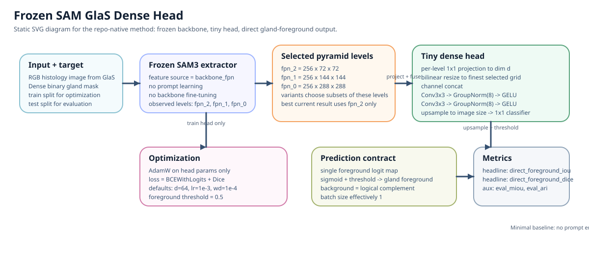
This figure is now generated from a Graphviz DOT source, then rendered to SVG for the site. The main spine shows the shared frozen-feature path, while the lower branches make the training loss/update loop and the inference thresholding/metric path explicit.
That design choice matters for the page story: it keeps the head deliberately small enough that poor results still say something about the readout itself, not about a giant downstream decoder quietly doing most of the work.
The ladder view below is the cleanest summary for a cold reviewer: weak training-free CFC, much stronger dense-supervised frozen-feature readout, and a best current frozen-feature run that sits meaningfully below but not absurdly far from the cited AutoSAM reference.
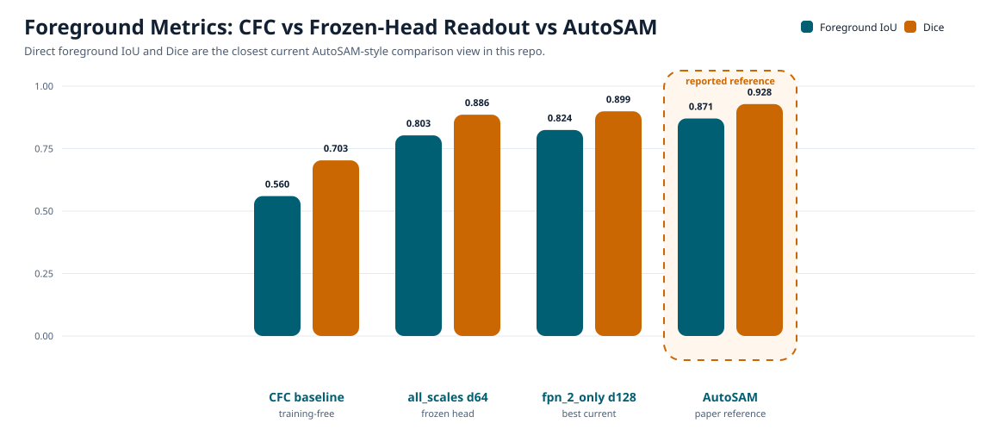
The jump from the training-free CFC baseline to the best frozen head is +0.264442 in foreground IoU and +0.196342 in Dice. That is too large to explain away as a minor evaluator mismatch.
The remaining gap to the cited AutoSAM reference is 0.046488 in foreground IoU and 0.028764 in Dice. This is why the current page is worth keeping as a serious internal baseline, even before the pending 224x224 rerun.
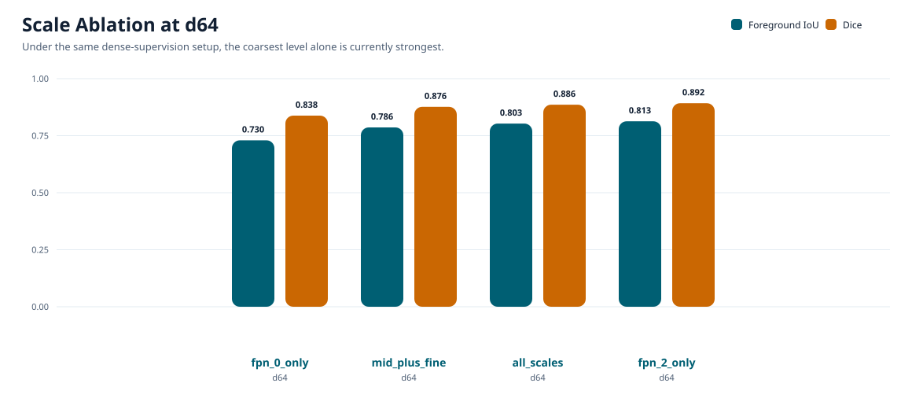
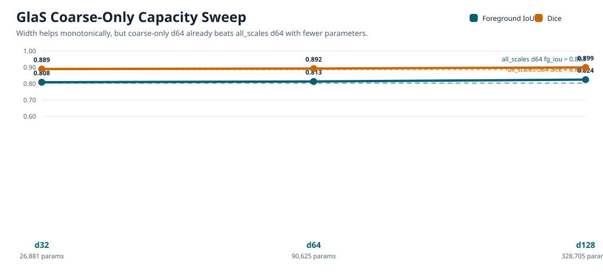
The key readout is qualitative as much as numeric: dropping from all_scales d64 to fpn_2_only d64 already improves the result while using fewer parameters, and extra width on top of the coarse-only branch helps again. That is why the page frames the current result as coarse-dominant, not just “bigger head wins”.
| Method | Supervision | Frozen backbone? | Learned prompt generator? | Trainable params | Fg IoU | Dice | eval mIoU | eval ARI | Notes |
|---|---|---|---|---|---|---|---|---|---|
| CFC training-free baseline | none | yes | no | n/a | 0.559870 | 0.703093 | 0.576410 | 0.254778 | Exact GlaS flip-avg coarse-only baseline from the phase-1 AutoSAM comparison note. |
| Frozen mask head all_scales d64 | dense binary gland masks | yes | no | 197,249 | 0.803117 | 0.885918 | 0.793207 | 0.624593 | Legacy tiny multiscale decoder; summary bundle records 40 epochs despite the older directory name. |
| Frozen mask head fpn_0_only d64 | dense binary gland masks | yes | no | 90,625 | 0.729788 | 0.838083 | 0.715166 | 0.479865 | Finest single-scale control. |
| Frozen mask head mid_plus_fine d64 | dense binary gland masks | yes | no | 143,937 | 0.786244 | 0.876425 | 0.771574 | 0.582750 | Drops the coarsest scale and fuses only the two finer levels. |
| Frozen mask head fpn_2_only d64 | dense binary gland masks | yes | no | 90,625 | 0.813221 | 0.892288 | 0.803947 | 0.644130 | Default-width coarse-only run; this is the ambiguous `fpn_2_only` directory that resolves to d64. |
| Frozen mask head fpn_2_only d32 | dense binary gland masks | yes | no | 26,881 | 0.808445 | 0.889356 | 0.798616 | 0.633705 | Lower-capacity coarse-only control. |
| Frozen mask head fpn_2_only d128 | dense binary gland masks | yes | no | 328,705 | 0.824312 | 0.899436 | 0.813555 | 0.659685 | Best current frozen-feature run and the current internal headline comparison point. |
| AutoSAM reported paper reference | dense gland masks (paper) | reported only | yes (reported) | learned prompt encoder (reported in paper) | 0.870800 | 0.928200 | n/a | n/a | Not reproduced by us in this repo; strict 224x224 protocol-matched rerun is still pending. |
The commands below are the compact replication ladder from the method note. They are enough to smoke-test the path, reproduce the 40-epoch all-scales reference, and rerun the current best coarse-only width-128 result under the recorded defaults.
The saved runs used ./.venv/bin/python with the shell prefix PYTHONNOUSERSITE=1 PROTOCOL_BUFFERS_PYTHON_IMPLEMENTATION=python, seed 0, device cuda, and model id facebook/sam3.
Recorded package versions from the best current run: Pillow 12.1.1, datasets 4.7.0, numpy 1.26.4, torch 2.10.0, transformers 5.3.0.
After any rerun, inspect config.json, summary.json, and train_history.csv before trusting the directory name or the page summary.
The strongest example is train_all_scales_test_e20_visuals: the folder suffix says e20, but the saved metadata records num_epochs=40.
The replication-critical fields are variant, selected_level_names, projection_dim, decoder_dim, num_epochs, trainable_parameter_count, and the four headline metrics in mean_metrics.
This is the smallest reliable audit set for catching accidental protocol drift.
PYTHONNOUSERSITE=1 PROTOCOL_BUFFERS_PYTHON_IMPLEMENTATION=python ./.venv/bin/python main.py train-glas-frozen-sam-mask-head \
--dataset-root datasets/GlaS \
--device cuda \
--variant all_scales \
--train-limit 1 \
--eval-limit 1 \
--num-epochs 1 \
--output-dir outputs/glas_binary/frozen_sam_mask_head/smoke_all_scales_train_to_test_1x1 \
--no-save-visuals# 40-epoch all-scales reference
PYTHONNOUSERSITE=1 PROTOCOL_BUFFERS_PYTHON_IMPLEMENTATION=python ./.venv/bin/python main.py train-glas-frozen-sam-mask-head \
--dataset-root datasets/GlaS \
--device cuda \
--variant all_scales \
--num-epochs 40 \
--output-dir outputs/glas_binary/frozen_sam_mask_head/train_all_scales_test_e20_visuals
# best current coarse-only d128
PYTHONNOUSERSITE=1 PROTOCOL_BUFFERS_PYTHON_IMPLEMENTATION=python ./.venv/bin/python main.py train-glas-frozen-sam-mask-head \
--dataset-root datasets/GlaS \
--device cuda \
--variant fpn_2_only \
--projection-dim 128 \
--decoder-dim 128 \
--num-epochs 40 \
--output-dir outputs/glas_binary/frozen_sam_mask_head/train_fpn_2_only_d128_test_e40Each row below uses the repo-native GlaS triptych panels, cropped back into explicit Input, GT, and method-specific prediction columns. That keeps the page faithful to the saved run artifacts instead of fabricating a new qualitative format.
The training-free CFC branch nearly misses the gland entirely here. Both supervised heads recover the structure, and the best coarse-only readout edges the all-scales head again.
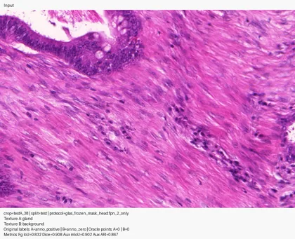
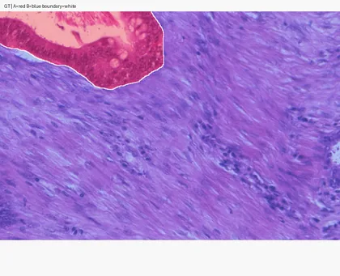
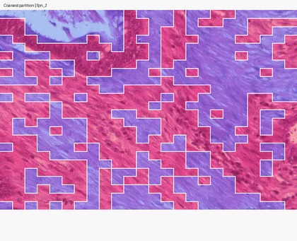
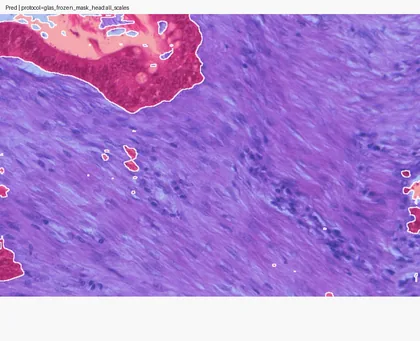
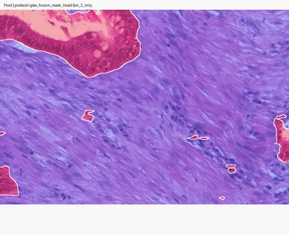
This crop is a useful reminder that the best current result is not just a width effect. The coarse-only d128 head is visibly cleaner than the all-scales d64 baseline.
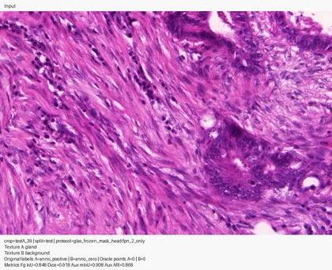
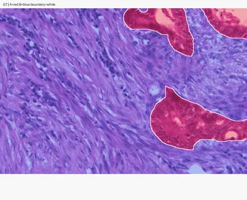
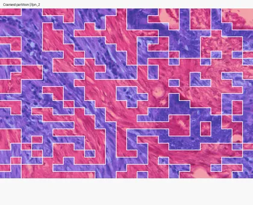
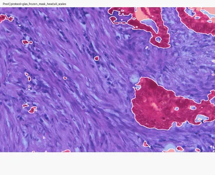
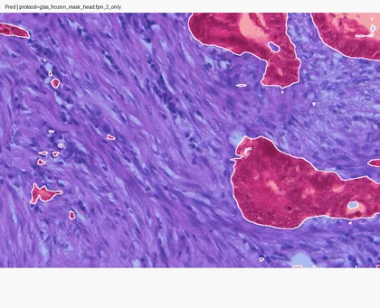
The strongest aggregate result is coarse-only, but this crop is a good counterexample. The all-scales d64 head is actually better here than the best coarse-only run.
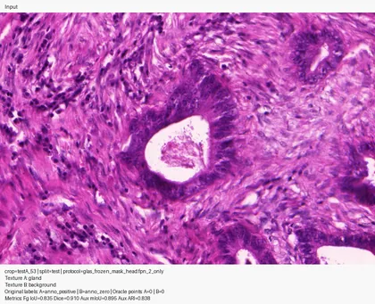
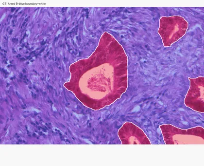
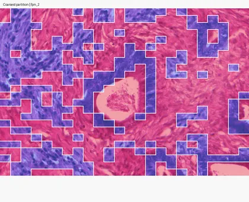
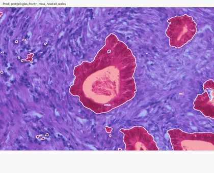
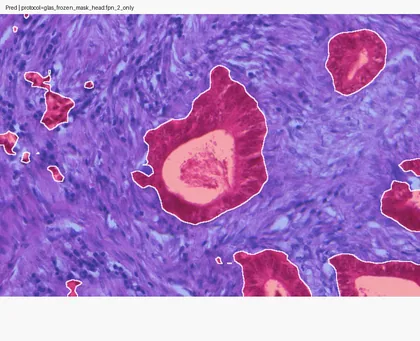
CFC is weak, the all-scales head improves it, and the best coarse-only head improves further. This is representative of the current coarse-dominant readout story.
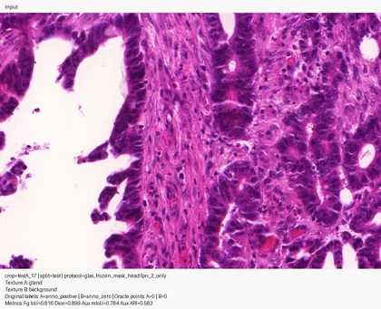
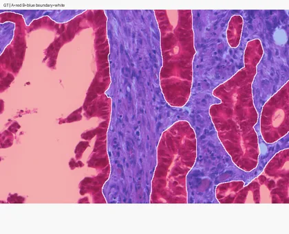
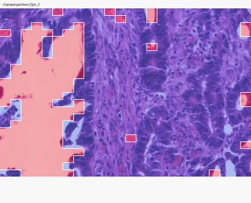
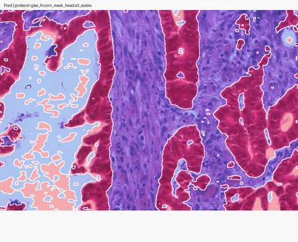
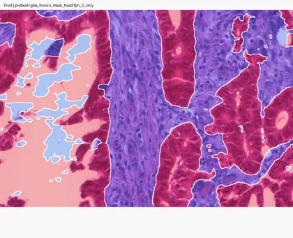
This crop stays difficult for the supervised frozen-feature heads and is worth keeping visible. The current page is not claiming that the readout fully dominates every CFC sample.
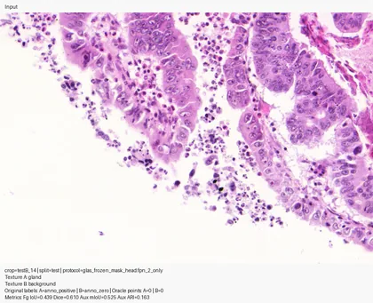
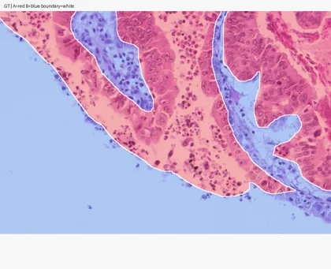
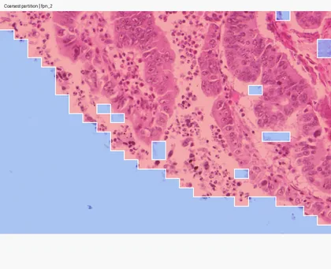
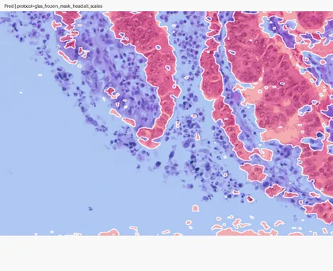
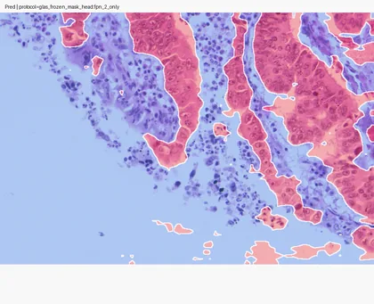
The current evidence does not say that SAM3 is already AutoSAM or that the project is solved. It does say that weak training-free CFC on GlaS should not be read as evidence that frozen SAM3 lacks gland information. A tiny supervised head already closes most of the gap to the cited AutoSAM foreground numbers, and the strongest signal currently comes from the coarsest frozen SAM level.
That makes the current lesson mostly about readout design, not feature absence. The frozen representation appears substantially more informative than the training-free clustering route suggested.
224x224 train/eval setting; that rerun is still pending.fpn_2_only is labeled explicitly as d64 or d128 throughout this page so the default-width run is no longer ambiguous.